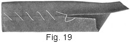
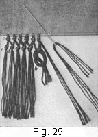

1933—Principles of Tailoring
Woman's Institute of Domestic Arts & Sciences, by Mary Brooks Picken
Tailored Buttonholes, Buttons, and Trimmings
TAILORED BUTTONHOLES
CHARACTERISTICS AND TYPES
1. A buttonhole is a slit in a garment made to receive a button. A tailored buttonhole, which is one that is used in tailored garments, differs from a plain buttonhole in several ways, although it is intended for the same simple purpose. In the first place, it is generally larger, and as it is subject to greater strain it must be made firmer, thus calling for heavier thread. Such a buttonhole does not shape itself around the button when used as a fastening, so it must have an eyelet at the front end to provide a resting place for the shank of the button or for the thread that holds the button in place on the garment and to permit the buttonhole to come down smooth ' on the button, a really essential feature. In addition, the tailored buttonhole must almost invariably have a bar at the end opposite the eyelet to give it strength and to present a substantial appearance.
2. Above all, tailored buttonholes must be neatly and correctly made. The tailored garment that is perfect in every other particular will have an amateurish appearance if its buttonholes are poorly cut and improperly worked. Tailors and other persons in the trade take great pride in the buttonholes they make, and many of them judge the skill of another by the buttonholes alone. One way, and sometimes the only way, of determining whether a suit is factory-or custom-made is by observing the manner in which the buttonholes are made, that is, whether they are hand-done. It should therefore be the aim of every woman who desires garments that are above the ordinary, to give particular attention to the tailored buttonholes she works in them.
3. Position and Types of Buttonholes.—Tailored buttonholes are generally cut so as to be horizontal—that is, perpendicular to the edge of a garment—and in rare cases they are placed so as to be diagonal, or slanting. Seldom, if ever, are they made vertical, that is, parallel with the edge of a garment, because such buttonholes do not hold the buttons so well as do the others and they are not in harmony with the strictly tailored lines of a tailored garment.
Although there is only one true tailored buttonhole, namely, that which is worked with buttonhole twist and buttonhole-stitches, certain others are classed as tailored buttonholes, because they are often placed on tailored garments. These are known as the simulated buttonhole, which consists simply of stitches made on the material for trimming purposes in imitation of a buttonhole, no slit being used; the material-bound buttonhole, that is, the one that has the cut edges bound with material; and the braid-bound buttonhole, which has the cut edges bound with braid, usually military braid.
4. Making Perfect Buttonholes.—The making of perfect buttonholes demands practice and the use of proper tools and materials. The woman unaccustomed to making buttonholes will do well to practice until she is able to make perfectly uniform stitches, both as to depth and distance apart, and has mastered the art, for it is indeed an art, of cutting, basting, stitching, overcasting, stranding, and working a perfect buttonhole.
The tools and materials required for the making of buttonholes, as well as the various steps that are necessary for perfect workmanship, are taken up in detail in this Chapter. After the woman has had sufficient practice and has acquired a knowledge of the steps and tools and materials, she need have no hesitancy in undertaking the making of any tailored buttonhole. In fact, she will be inclined to look forward to the time of cutting and working buttonholes, as, for instance, in a coat that has been painstakingly done, as not only an important event, but one that will not be enjoyed unless full preparation has been made beforehand for every detail of the work and each step and tool is fully understood. But as hand-worked buttonholes take time, they should be used chiefly on good materials, concealed fasteners being employed on cheap materials.
BUTTONHOLE TOOLS AND MATERIALS
5. Buttonhole Cutters.—A pair of buttonhole cutters, an example of which is shown in Fig. 1, is an invaluable tool for cutting tailored buttonholes. Such a tool is constructed so as to cut slits and eyelets with one operation, as well as ordinary slits, such as are made with a pair of buttonhole scissors, thus insuring buttonholes that are absolutely uniform. The initial cost of such a tool is rather high, but in a shop or in other places where many tailored buttonholes must be made it works a great economy because it cuts buttonholes quickly and accurately.
At first glance, a buttonhole cutter may seem like a mysterious device for the cutting of so commonplace a thing as a buttonhole; but it is really very simple when all its parts are understood. As will be observed, there is on one side a knife, or cutting blade, a, directly behind which is an eyelet punch e, and on the other side a base b, against which the knife and punch are pressed in cutting. This base is cylindrical and is made so that it can be turned and fastened in place. This cylindrical base usually has ten irregular sections, as at c and d, and it is the length and the position of each of these sections that control the length of the buttonhole and permit buttonholes to be cut with or without eyelets. At f is a guide bar that serves to regulate the distance of the eyelet from the edge of the garment in cutting, a thumbscrew g being used to fasten this bar in place. At h is another thumbscrew, which fastens the base of the cutter in place when it is turned to a position that will give the length and kind of buttonhole desired.
In cutting a buttonhole with a tool of this kind, place the material over the cylindrical base and push the guide bar, properly adjusted, up against the edge of the garment; then bring the blade and punch down over the material resting on the base by pressing the handles of the cutter together. With a little experimenting, no difficulty will be encountered in adjusting and using the cutter for any length of buttonhole ranging from ½ inch to 1¼ inches. Before using the cutter on a garment, it is advisable to prepare a strip of three thicknesses of material arid cut a number of buttonholes, spacing them for a certain length and a certain distance apart and adjusting the cutter so as to cut both the eyelet and the straight buttonhole.
6. Buttonhole Scissors and Punches.—Buttonhole scissors may be used for cutting tailored buttonholes, but they must be very sharp and, after making the slit, it is necessary to form the eyelet with a punch. An ordinary eyelet punch, or awl, such as is used to punch holes in leather, is satisfactory for making the rounded end. In cutting a buttonhole with buttonhole scissors and an eyelet punch, take particular pains to have the eyelet directly in line with the buttonhole slit. If it is a fraction of an inch too high or too low, it will spoil the shape of the finished buttonhole.
7. Buttonhole Gimp.—As tailored buttonholes are subject to considerable wear, they must necessarily be made durable. For this reason, as well as to give a firm finished edge to a buttonhole, the edge should be stranded with what is known as buttonhole gimp. Buttonhole gimp, which is made in black and white, consists of very firm, small cotton cord closely wound with silk thread, being similar in appearance to fine, silk-covered hat wire. It is a scant 1/16 inch in diameter and very firm. It may be purchased at nearly all notion counters and tailors' supply houses.
8. Stranding Thread.—If it is not convenient to use buttonhole gimp or if the material in which the buttonhole is to be worked is not very heavy, a stranding thread, which may be made of heavy linen thread, will serve the purpose very well; in fact, some persons consider it to be even better than gimp, because it is softer and thus prevents the working thread from wearing through readily.
9. To make stranding thread, thread a needle with a convenient length of linen thread, say 1½ to 1¾ yards, bringing the ends together just as if making ready to sew with a double thread. Then wax this thread with beeswax, which may be purchased at any notion counter, carrying the thread over the beeswax quickly and bringing it down carefully in order to wax the thread the full length and yet not have too much wax at any one place. The beeswax serves to hold the strands of the thread together and also to make it firmer, so that it will not press down too closely on the material when the working thread, or buttonhole twist, used in making the buttonhole is put over it.
After the thread is waxed, finish making the stranding thread by twisting the strands together in the following manner: Hold the needle in the left hand between the thumb and the forefinger, letting the thread fall at the lower edge of the inside of the hand. Then, with the inside of the right hand, roll the thread between the hands, bringing it around toward the thumb of the left hand. After the twisting is begun, run the hand down the thread over the wrist for 4 or 5 inches. Repeat this operation over the same length of thread two or three more times in order to twist and smooth the strands well.
Place the portion of the thread just twisted around the little finger of the left hand, bringing it up over the thumb and forefinger, and allow the loose end of the thread to take the same position over the lower part of the hand as at first. Then repeat the twisting operation; that is, twist another section of the thread by bringing the hand over it and rolling it between the hands. Do this two or three times to keep the thread smooth. Then bring the thread up around the little finger and then around the thumb, as before, forming a figure 8 out of it, and continue to roll and twist the strands of thread until the entire length is twisted.
By twisting the thread in this manner, an even twist is insured and the two threads will hold as one thread; whereas, if they are not rolled and twisted from the needle, kinks will come when the thread is in use, causing inconvenience and probably imperfect work. This amount of stranding thread is usually sufficient for several buttonholes, as each buttonhole requires about f yard. Also, by preparing it all at one time in this manner, a more even thread is secured and time is saved.
10. Buttonhole Thread.—Buttonhole thread, or twist, as it is generally called, is used for working tailored buttonholes, and to distinguish it from the stranding thread it is frequently referred to as the working thread. Buttonhole twist is usually purchased in 10-yard spools, but it is also sold in large spools at tailor shops or in tailors' supply houses. In the large spools, however, it may be had in only a few colors; namely, black, white, dark gray, and brown. For home use, it is advisable to buy the twist in small quantities; in fact, no one would be justified in buying large spools unless there is work to require a large amount of one color of twist. For shop work, however, it is much more economical and convenient to obtain the twist in large quantities.
11. The twist, sizes A to D, comes in black only, while in sizes D, E, and F, it may be had in a variety of colors. Size A twist is the finest, and size F, the heaviest and coarsest.
In purchasing buttonhole twist, it is advisable to lay the thread out on a sample of the material and then to make sure that it is two shades darker. Although sewing silk should be purchased one shade darker than the material with which it is to be used, buttonhole twist should be two shades darker because the stitches embed themselves in the material securely and they will not entirely conceal the interlining unless they are two shades darker. Some materials in the medium and darker shades, especially blue, will be found difficult to match, so buttonholes in them are worked in black.
12. As it is difficult to join the thread used in working buttonholes, the best plan is to use a length of thread that is sufficient to work the entire buttonhole. If this is done, the purl will be in no danger of appearing broken or irregular in any place. A small tailored buttonhole may be worked with ¾ yard of twist, but buttonholes of average size take a full yard length. If a thread breaks and a new thread must be used in the process of making the buttonhole, fasten off the first thread well and secure the new one, beginning a stitch back of the first thread and bringing the stitch of the second thread up through the last purl of the first thread, so as to make the joining as nearly invisible as possible.
13. Thimble.—In making tailored buttonholes, the thimble finger and the forefinger come very close to the buttonhole and the thread. Therefore, as the thread is of silk, it is very essential to have a thimble that is smooth, that is, without any rough places. If the thread catches on the thimble even once, it will become rough and possibly spoil the effect of the buttonhole.
14. Needles.—Needles of the best quality should be used in buttonhole work. A medium-heavy needle is necessary for the stranding thread, and one that has an eye just large enough to carry the working thread should be used for it. A needle that is too large makes a close placing of the stitches difficult and also weakens the edges. As a general rule, a No. 6 short needle is the proper size for correct working, the term short meaning a needle about 1 ½ inches long. Such a needle permits all the thread to be used and also facilitates the looping of the thread around the needle.
15. Stiletto.—For shaping the eyelet after a buttonhole is worked, a stiletto is a very satisfactory tool. Men tailors generally prefer the awl previously mentioned, possibly because they are accustomed to using it. However, the stiletto from the embroidery basket will answer very well.
MAKING A TAILORED BUTTONHOLE
16. In Fig. 2 is shown in detail the making of a tailored buttonhole, including each step and the operation in the development — the marking, basting, stitching, cutting, stranding, working, and final basting and shaping—as well as the position of the buttonhole from the edge, and the interlining, which serves as a foundation. This illustration should be studied in connection with the following directions so that a correct knowledge of how to make tailored buttonholes may be obtained.
17. Foundation for Tailored Buttonholes.—Tailored buttonholes are almost invariably worked through three thicknesses of material, two of them consisting of the material of which the garment is made and the other of the interlining between the two thicknesses, as is indicated at a, Fig. 2. The purpose of the interlining is to stay the edges of the garment and thus prevent it from stretching, and to provide a firm foundation for the buttonholes. Especially is this interlining necessary in woolens, as the threads of such materials do not hold together so well as do those of linen and cotton fabrics.
In garments made of woolen materials, the interlining should be a soft, pliable linen canvas that has been carefully shrunk. A firm grade of unbleached muslin is also desirable for such a purpose. For the interlining of silk garments, silk of lighter weight than the garment material itself, sateen, or soft cambric is suitable, and for linen garments, butcher's linen, soft cambric, or muslin is desirable. In dark-colored garments, it is advisable to use a dark-colored interlining, and in light-colored ones the interlining should be of a lighter color than the garment material.
18. If buttonholes are to be worked in places on a garment where there is no interlining, then it is necessary to baste a piece of interlining between the two thicknesses of the material at these places. Such interlining should be 1 inch wide and ½ inch longer than the buttonholes themselves. All three thicknesses of material should be basted very smoothly together at each place where a buttonhole is to be made, and then carefully pressed with a damp cloth on the wrong side of the fabric.
If buttonholes are to be worked in places where an interlining cannot be inserted between two thicknesses of material, a piece of lining may be put underneath. In such a case, the lining must be of a color that is very similar to the material itself, and after the buttonhole is worked the edges of the lining material must be carefully trimmed away up to the outside edge of the buttonhole-stitches.
19. For practice in the making of tailored buttonholes, it will be necessary to prepare a strip on which to work the buttonholes, using for this purpose a piece of woolen material, 8 inches long and 8 or 10 inches wide, and a piece of canvas or firm muslin, as shown at a, of the same length as the woolen piece and half as wide. So that this practice strip will be the same as the edge of a garment, fold it lengthwise through the center and place the canvas between the two thicknesses. Then baste the outer edge carefully and stitch f inch from the edge, as shown at b. With such a strip made, the marking and making of tailored buttonholes may be begun.
20. Position and Size of Buttonholes.—As buttonholes must be properly spaced and marked before they are cut, locating their position and determining their size are the first points to consider after the outside edge of the garment is stitched or basted, as at b. Tailored buttonholes should be spaced uniform distances apart, and the distance between the eye of each one and the finished edge of the garment must not vary in the least. When used as a closing, the buttonholes should be at least 1/8 inch from the stitching.
Just how far apart the buttonholes should be depends on the fashions of the day, for they regulate the size and number of buttons to be used, and these, in turn, regulate the buttonholes. Sometimes buttons are placed very close together almost the entire length of the coat front, and at other times only one, two, or possibly three are used. When the size and the number of buttons are determined, the positions for the top and bottom buttonholes must be marked accordingly, and then the distance between these two points equally divided into the required number of spaces. As a rule, the larger the buttons, the fewer of them will be used and the greater will be the space between them, the buttonholes, of course, being spaced to correspond. The size of the buttonhole is likewise governed by the size and the thickness of the buttons. The length of the buttonhole should be equal to the diameter of the button, plus 1/8 to 3/8 inch, depending on its thickness.
If buttonholes must be placed so as to be diagonal with the edge of the garment, they should be carefully stayed in order to give them the required strength. Such buttonholes must be so marked that all will be in a true line and each one will be parallel with the other.
21. Marking Buttonholes.—After deciding on the size and position of the buttonholes and the number there are to be, the next step consists in marking them on the material, as is shown at c, Fig. 2. The marking should be done with tailors' chalk having a sharp edge, so as to make distinct lines, and a perfectly straight edge, should be used as a guide in marking. In marking for buttonholes, make the horizontal lines first, and in order to space them accurately, procure a piece of cardboard equal in width to the distance they are to be apart. Place this cardboard so that the first two buttonholes can be marked by running the chalk along the top and the bottom edge; then place the cardboard so that its top edge is along the second buttonhole mark, and mark for the third one. Continue the work in this way until all the buttonholes are marked.
After the horizontal lines are drawn, make the vertical lines that indicate the width that each buttonhole is to be, as at d and e. To aid in this work, use a piece, or strip, of cardboard that is exactly as wide as each buttonhole is to be. Place this cardboard parallel with the edge of the garment or with the warp threads of the material and make a chalk mark on each side, thus insuring uniformity. The lines for the buttonholes should be of about the same proportion as those shown in the illustration.
22. Basting Preparatory to Stitching.—The next step in making a tailored buttonhole is to baste around the chalk lines in the manner shown at f and g; that is, with bastings that are a scant J inch long and are placed diagonally with the chalk marks that indicate the width that the buttonholes are to be. The purpose of such basting-stitches is to hold the material so that it will not pull or slip out of place.
33. Outlining Buttonholes.—After the marking and the diagonal basting have been completed, stitch through all thicknesses of the material with the sewing machine 1/16 inch on each side of the horizontal chalk line, as shown at h and i, and around the outside end of the line in the form of a circle, as at j. This stitching serves to outline the buttonhole, to secure the material so that the edges of the three thicknesses will remain together firmly after the buttonhole slit is cut, and to prevent the fabric from slipping when the buttonholes are being worked. Care should be taken to form the circle over the chalk marks as indicated, so that the center of the eyelet, when the buttonhole is cut and worked, will be in exact line with the finished buttonhole. Begin the stitching and end it at the back, or inside, end of the buttonhole, and after it is completed bring the thread ends through to the wrong side, thread a sewing needle with them, and take a couple of back-stitches to make sure that they will hold securely. Then cut away the surplus thread up close to the machine stitches.
34. Cutting Buttonholes.—After the machine stitching has been done on all the buttonholes that are to be made, they are ready to be cut. It is not advisable to cut all the buttonholes before beginning to work them; rather, the best plan is to cut one and work it and then proceed with the next, and so on. In this way, the danger of their fraying out while one is being worked will be overcome. If the buttonhole cutter is to be used for this work, place the punch of the cutter directly in the center of the stitched circle prepared for the eyelet, and the blade in line with the mark; also, be sure that the cutter is adjusted for the correct width of buttonhole. If buttonhole scissors are to be used, place the notch of the scissors just inside the stitched circle and cut an the marked line.
In the absence of both buttonhole cutter and buttonhole scissors, a pair of ordinary scissors may be used. With such scissors, first cut a slit by inserting the point of one blade in the center of the circle and then cut through all thicknesses exactly on the mark, or midway between the stitching. The scissors used for cutting should be sharp, so that the buttonhole slit may be cut with one movement of them.
After the slit is cut with either buttonhole or ordinary scissors, the eyelet must be formed. This may be done with an eyelet punch; but if there is none at hand punch a hole in the space provided with a stiletto or an awl, putting it in from the right side and then from the wrong side. Then trim away the surplus material up to within the same distance of the stitched edge of the eyelet space as the buttonhole slit is from the edges of the rows of stitching.
35. Securing the Edges of Buttonhole Slits.—The next step, after cutting the buttonhole slit, is to secure the edges so as to keep them from raveling and to make them very firm. This may be done by overcasting them with very close, uniform stitches, taking them back almost to the machine stitching and overcasting with strong cotton thread. In some custom-tailor shops, in addition to overcasting, the trimmed edges are secured by waxing. On gray or novelty goods, beeswax is used, and on dark-blue or black materials, harnessmakers' wax is employed. To apply either wax, heat the blade of an ordinary steel kitchen knife and rub it over the wax; then quickly insert it in the buttonhole slit and rub it back and forth a few times so that part of the wax will adhere to the slit edges. The wax keeps these edges from raveling and also holds the material together, making it possible to work the buttonholes more rapidly than if the edges are just overcast.
26. Stranding Buttonholes.—After a buttonhole is cut and before it is worked, it must be stranded with gimp or with stranding thread, as has already been mentioned. The method of stranding is the same, whether gimp or stranding thread is used, but whether one or the other should be used depends somewhat on the material, gimp being more suitable for heavy materials and stranding thread, for light-weight fabrics. Stranding should be done in the following manner:
Thread a needle with a length of the gimp or the stranding thread and tie a knot in one end of it. Then, at a point about ¼ inch beyond the back end of the buttonhole and in a direct line with the upper edge of the buttonhole slit, insert the needle through the three thicknesses of the material from, the right side, pulling it through so that the knot will come as at k, Fig. 2. With the finished edge of the garment—that is, the eyelet of the buttonhole—toward you, bring the thread out at the left end of the buttonhole, just below the stitching, and carry it across to. the eyelet end. Then secure it in this position until half the buttonhole is worked, pushing the needle firmly into the material and wrapping the gimp or the stranding thread around it, as at l. When the upper half of the buttonhole is worked, bring the gimp or the stranding thread along the lower half and fasten it in the same way at the back end of the buttonhole, as shown at m. After the buttonhole is completed, bring the gimp or stranding thread straight through the material precisely at the back end of the buttonhole and to the under side; then cut it off close to the material. Likewise, cut off the knotted end and pull the gimp or the stranding thread away from the right side.
In very firm materials, where the hole made by putting the needle in, as at k, might show in the material, it is better to pin the gimp or stranding thread right at the end of the buttonhole, rather than to take a stitch. In this way, no marks will show, as those made by the pin will be concealed by the buttonhole-stitches when the buttonhole is finished.
27. Working Buttonholes.—After a buttonhole is stranded, it is ready to be worked. Thread a needle with a strand of buttonhole twist, or working thread, of the proper length and color. Pull it lightly over beeswax and then over the edge of a warm iron, so as to distribute the wax evenly. Then, holding the garment so that the outer edge is at the left, fasten the thread at the end, on the right-hand side and up close to the end of the buttonhole slit, with a tiny back-stitch. Hold the buttonhole in this position over the forefinger of the left hand, and bring the fastened end of the thread toward the inside of the buttonhole. Insert the needle through the slit and bring it up just outside of the machine stitching; then bring the two threads as they come from the needle around the point under the needle, and draw up the thread firm and close to form the stitch. Then insert the needle again and continue working to the opposite end of the buttonhole, keeping the nail of the left thumb just back of the stitching as a guide in taking the stitches, so as not to make them too deep in any place.
28. When the eyelet is reached in working the buttonhole, release the strand of gimp or stranding thread at the front end and hold it in position around the eyelet while the buttonhole-stitches are taken over it. Arrange the stitches at the beginning and ending of the eyelet so as to form corners; that is, so that the circle of the eyelet will be as nearly perfect as possible. Turn the work gradually and change the direction of each stitch slightly while working the eyelet, so that the stitches will radiate from the center. To do this, the purl must be crowded and the other end of the stitches placed a trifle farther apart and more slanting than they are at the sides of the buttonhole. After the eyelet is completed, pull up the stranding thread under the working thread, so as to take out any slack that may be in it and to insure a true, uniform eyelet edge, securing the stranding thread at the back end of the buttonhole, as at m.
29. Next, turn the work so that the other side of the buttonhole will be toward you and proceed to work this half of the buttonhole. Just before the end is reached, remove the stranding needle at m from the cloth and take the stranding thread down through the cloth, precisely at the end of the buttonhole to the wrong side; then twist it around the end of the finger and hold it tight until the last buttonhole-stitch is finished.
30. When the buttonhole-stitches are completed, a bar may be worked at the end, if desired. To make such a bar, turn the work so that the back end of the buttonhole will be next to you. Then take two or three bar-stitches across the end with the working thread, keeping them very close to this end of the buttonhole, and cover these stitches with tiny over-and-over stitches. Make the little over-and-over stitches directly alongside of each other, so that a neat, narrow bar will be the result. By putting the eye of the needle instead of the point under the bar threads, the work may be done more quickly, as the eye of the needle will not catch the thread When the over-and-over stitches are completed, fasten the working thread securely on the inside of the material and cut off the stranding thread.
31. Pressing and Finishing.—When a buttonhole is worked it is advisable to overcast it with basting thread, as at n, Fig. 2, and to press it well on the wrong side, using a press cloth, so that the edge will be smooth and the ends of the buttonholes properly shaped. The overcasting-stitches should be left in until the garment is entirely completed. In pressing, the eyelet of the buttonhole should be rounded out into a perfect circle, as at o, by means of a stiletto.
32. Commercial Buttonhole Making.—The person who acquires skill in the making of buttonholes may feel that she possesses an accomplishment of which she may well be proud—one that will mean the saving of money or possibly place her in a position to earn money by making tailored buttonholes for others. In the large custom-tailoring establishments are employed buttonhole makers, that is, persons who make nothing but buttonholes. These persons take a garment, for example a coat, that is finished with the exception of the lining, and then stitch, overcast, strand, work, and press the buttonholes. The price they receive depends on the type of material used in the garment and also on the quality of the work done. In estimating charges, the size of the buttonhole is also considered.
SIMULATED BUTTONHOLES
33. The simulated buttonhole, or blind buttonhole, as it is sometimes called, is merely an imitation buttonhole. As will be observed from Fig. 3, it resembles a tailored buttonhole, yet it has no eyelet nor opening. It consists merely of single-purl buttonhole-stitches made in two rows and placed in position as a trimming where no fastener is needed. Chain-stitches, knot-stitches, as well as stem-stitches may be used to work simulated buttonholes, but then only one row of stitches placed very close together is worked. The advantage of this buttonhole is that it may be quickly worked, and, as the material in which it is worked is not cut, no interlining is required, nor does it have to be stayed. As this kind of buttonhole is used as trimming, colored thread that contrasts with the material is often used in working it.
34. The way in which a simulated buttonhole is worked with the single-purl buttonhole-stitch is clearly indicated in Fig. 3, the various steps being as follows: First mark the position of the buttonhole with tailors' chalk in the manner explained for a tailored buttonhole. Then proceed to strand or outline the buttonhole with stranding thread or gimp. Thread a needle with the stranding thread, tie a knot in the end of the thread, and then insert the needle from the right side of the material, so that the knot will be placed as at a. Then bring the needle up through the material as at b, put it in as at c, and out as at d, and then bring it over to e, here taking a stitch through the material and then pulling the stranding thread through to the wrong side. With the stranding thread thus placed, proceed with the making of the buttonhole-stitches. Hold, the work as for tailored buttonholes, and work over the upper thread and through the material, as at f. When this edge of the buttonhole is completed, turn the work and make the stitches over the other stranding thread, taking the stitches through the material, as before, and keeping the purl very close to the adjoining side. When this side. is worked, fasten the threads on the wrong side as for a tailored buttonhole, trim them off, and press the buttonhole carefully from the wrong side, when it will appear as at g.
BOUND BUTTONHOLES
35. Buttonholes may be bound with the material of which a garment is made or with braid. The material-bound buttonholes, however, are the more important of the two, because braid buttonholes are used only when a garment has braid applied elsewhere as a trimming. The bound buttonhole, like the tailored buttonhole, must be made larger than the plain buttonhole. Seldom, if ever, is it made smaller than 1 inch, and to accommodate large buttons it is often made 2 to 2½ inches wide.
36. Material-Bound Buttonhole.—At a, Fig. 4, is shown a buttonhole bound with the material of which the garment is made, although for this kind of buttonhole heavy silk or satin may also be thicknesses of material, as in the tailored buttonhole. The under thickness, or inside facing, of the material, however, must be turned back out of the way, as at a, Fig. 5, until the buttonhole binding is applied. For each buttonhole there must also be provided a piece of binding material that is 2 ½ inches wide and of a length that will permit it to extend ¾ inch on each end of the buttonhole opening. This binding may be cut from a straight or a bias piece of material. The bias piece is usually preferred, as it is easier to apply. The procedure in making a material-bound buttonhole is as follows:
37. First, as directed for marking the position of tailored buttonholes, mark the position of the bound buttonholes, and at the same time mark the position of the buttonhole on each binding piece, placing the mark so that there will be ¾ inch of material on each side of it and 1 ¼ inches above and below it. Next, baste a binding piece to the upper, or outside, thickness of the garment material and the interlining, placing it so that the mark for the buttonhole is exactly over the buttonhole mark on the material. Use diagonal basting all around the buttonhole mark, placing it about ¼ inch from this mark, as at b and c, Fig. 5, so as to hold the thicknesses of material perfectly smooth. With this done, machine stitch 1/8 inch on each side of the chalk mark, as shown at d, and straight, across the end marks, pulling the ends of the machine stitches through and tying them securely at the under side.
After stitching in this manner, remove the basting thread and cut the slit with a pair of sharp scissors. Cut through both the material and the binding on the chalk mark between the rows of stitching, beginning 1/8 inch from one end and continuing to within 1/8 inch of the other end, and then, from each end of the slit, make diagonal cuts to the corners. With the opening thus cut, turn the binding piece through to the wrong side, as at e, and with the fingers press the seam edges at the sides and ends of the slit back from the opening, or allow one of the seam edges to extend out into the welt if the firmness this affords seems necessary. Trim the edges slightly to fit the welt and roll the binding out 1/8 inch from the machine stitching, as in a welt pocket, so that it will fill up half of the opening and form little plaits underneath at the ends on the wrong side, as at c, Fig. 6, and then baste close to the stitching, as at f, Fig. 5. Next, baste across the opposite side and the ends in the same way, and the buttonhole will appear as at a, Fig. 6. After basting in this manner, trim away the surplus binding to within ½ inch of the opening and then overcast to the interlining, as shown at b. If no interlining is used, the overcasting is omitted.
Next, remove the basting around the buttonhole, bring the under thickness of the material a, Fig. 5, back into position, as in Fig. 7, which shows the under side of the garment, and then baste all thicknesses together around the buttonhole, as at a. With this done, cut carefully from the right side through the under thickness of material between the buttonhole edges, as at b, beginning 1/8 inch from one end and continuing to within 1/8 inch of the other; then turn to the wrong side and at each end of the opening just cut make short, diagonal cuts to the corners of the buttonhole, as at c. Turn the raw edges of the underneath material under1/8 inch at the sides, as at d, and the ends, and whip the turned edges, as at e. Then remove the basting, and the buttonhole on the under side will appear as at f.
When the buttonhole is finished on the under side, overcast its edges from the right side, as at b, Fig. 4. Then press the buttonhole under a cloth, remove the overcasting-stitches, and the completed buttonhole will appear on the right side as at a, Fig. 4.
38. Braid-Bound Buttonhole.—In Fig. 8 is shown a buttonhole bound with braid. For buttonholes like this, use silk braid ¾ inch wide, the grade known as military braid being best. Although black braid may be used on materials of dark color, the braid should preferably be of a color that matches the material of which the garment is made, and for stitching sewing silk of a color that exactly matches the color of the braid should be employed. As in the material-bound buttonhole just described, there should be an interlining between the two thicknesses in which braid-bound buttonholes are to be made. The procedure in making a braid- bound buttonhole is similar to that for a material-bound buttonhole, and is as follows:
39. To begin, mark the position and length of the buttonholes on the garment, and then, to serve as a guide in basting on the braid, make another chalk mark ¼ inch above and another¼ inch below each horizontal buttonhole mark. Next, turn back the underneath thickness of the material, so that it will not be caught in stitching. With the material thus made ready for the buttonholes, cut two pieces of braid for one buttonhole, cutting each piece 1 inch longer than the buttonhole is to be. It is advisable to cut only enough braid at a time for one buttonhole, so that the ends of the cut pieces will not become frayed. Baste one edge of each piece close along the chalk mark at each side of the center mark, beginning at one end mark of the buttonhole, continuing to the other, and letting ½ inch of the braid extend beyond each end. Next, stitch the braid close along its edges with the sewing machine from one end of the buttonhole to the other, as it was basted, as shown at a, Fig. 9, and when the stitching is done pull the ends of the thread through and tie them securely on the under side.
With the braid stitched in place, remove the basting and proceed to cut the opening. Cut along the chalk mark, between the braid, to within 1/8 inch of the ends, and then cut diagonally to the corners as indicated at b. Next, turn one piece of the braid over the edge of the buttonhole slit, as at c, working it back well over the edge. Then baste it firmly to the interlining on the under side, just outside the machine stitching. Next, bring the other piece of braid through in the same manner and baste it in place. With this done, overcast the edges of the braid together, as at d. Next, turn the material back at the ends of the buttonhole, as at e, and, front underneath, back-stitch straight across these ends, fastening them securely to the braid; also, whip together the edges of the braid that extend beyond the ends of the buttonhole, as at f. Next, whip the sides and ends of the braid to the interlining, as indicated at g. and then carefully press the buttonhole from the right side under a cloth.
From this stage on, the work is practically the same as that for the material-bound buttonhole. Bring the under thickness of material back into position and baste all thicknesses together, close around the buttonhole. Turn the work to the right side, remove the overcasting, and cut between the edges of the buttonhole through the under thickness of material, beginning 1/8 inch from one end and extending to within 1/8 inch of the other; then turn to the wrong side and from each end of the opening make a diagonal cut to each corner. When the cutting of the opening is completed, turn under the triangular points at the ends the same as for the right side, whip along the turned edges, and then remove the basting. Finish the buttonhole by pressing carefully.
BUTTONS AND OTHER TRIMMINGS
BUTTONS FOR STRICTLY TAILORED GARMENTS
40. Buttons for strictly tailored garments are of two kinds; those made of vegetable ivory, bone, and various compositions, and those covered with material, which may be plain or decorated. Many persons fail to appreciate the value of suitable buttons, looking at them simply as necessities. Nevertheless, it is a fact that the kind of button often proclaims the class to which a suit or a coat belongs, because a person who knows the value of buttons that are in good taste almost invariably knows to the fullest extent the value of good material and correct lines and is sure to combine them. As a strictly tailored garment should be dignified in line and of excellent workmanship, a knowledge of the right kind of button to use will be of great assistance in giving to it just the right finishing touch. The original cost of good buttons, that is, those which are not covered, is sometimes considerable, but neat dark or light buttons can be used repeatedly on tailored garments of dark or light colors, because they seldom break, do not wear out, and are almost always in vogue on tailored garments.
41. Types of Buttons.—In Fig. 10 are shown two styles of buttons in different sizes.
The style of button shown in (a) is known as a four-hole button and is used on men's garments to give them the tailored look. Such buttons may also be had with two holes and in innumerable designs. In choosing buttons of this kind, it is well to remember that the design must be neat arid plain to be in keeping with strictly tailored garments.
The style of button shown in (b) is a shank button, called, also, by some the women's tailored button, because it was designed originally for women's garments. This kind of button is to be had in as many sizes and designs as the hole buttons, and while either kind is in good taste, the two- and four-hole buttons seem to have preference even for women's garments.
Of the three sizes of buttons,shown in full size in Fig. 10, that at a is used for trimming cuffs and belts; that at b, when buttons are to be placed close together on the front of a coat or a skirt; and that at c, when three to five buttons are to be used for the front of a coat or a skirt.
42. Decorative Self-Covered Buttons.—If a garment is to be trimmed with braid or if it is desired to use a button that is a little more decorative than a plain self-covered button, braid or thread may be used to relieve the plainness, as in the buttons shown in Fig. 11. In (a) is shown a covered button that is decorated with strands of thread arranged in hexagonal design and knotted in the center; in (b) is shown the spider-stitch worked over the covered button; and in (c), (d), and (e) are shown simple cross-applications of soutache braid.
43. The main point to remember in covering buttons is to secure the thread or the braid on the underneath side where it crosses. Thread used for ornamenting the buttons should be caught through the material at the center of the mold, and braid should be carefully tacked. The kind of material to use for decorating covered buttons depends on the individual requirements, the width and color of braid or thread giving inspiration for designs that are suitable for the purpose. Almost any of the embroidery-stitches—the cross-, satin-, and seed-stitches, French knots, and many others—may be used in ornamenting buttons. Usually those stitches which will produce a flat, tailored effect are the ones that are preferred for this type of decorative work.
44. Sewing Covered Buttons on Garments.—In sewing self-covered buttons on garments, it will be well to bear in mind that flat buttons are more attractive if sewed close to the garment, instead of being allowed to hang loose. Ball-shaped buttons, however, appear better if they are allowed to hang loose. Sometimes they are allowed to hang from a tiny cord made of buttonhole twist as for the overcast bar, the length of the cord varying according to the position of the button. This cord must be neatly made and of a color to match the garment.
In sewing on any type of button, take care not to draw the material with the sewing-stitches.
CROWFEET, ARROWHEADS, AND BOW-TACKS
45. Crowfeet, arrowheads, and bow-tacks are ornamental stitches used extensively by tailors to give a finish and a suggestion of hand-work to a tailored garment, the arrowheads and bow-tacks being simpler to make than the crowfeet. They are placed at the corners of coat collars, pockets, and pocket laps, as well as at the termination of seams, tucks, and plaits, at the end of machine stitching, and at a given point on tucks or plaits. Aside from the buttons of a tailored garment, these ornamental stitches, or figures, as they may well be called, sometimes form the entire ornament or trimming, and they add greatly to the finish of a tailored garment if they are well made. In fact, they may be used in many ways and with more satisfaction as a simple ornamentation, but they are not attractive if they are not perfectly made. If it is desired to use these stitches, a good plan is to practice making them in various sizes until proficiency is attained. Once the methods are understood and skill is acquired, they will prove to be very simple.
46. Crowfeet.—In Fig. 12 (a) is shown an example of a crowfoot, which, as will be observed, has three points and a raised triangular center, all of which are formed in making the stitches. The size of crowfeet is governed by their location on a garment, as well as by a person's taste, one having triangular sides ¾ inch long being used perhaps the most. They are made larger than this, but seldom smaller. In working crowfeet, colored thread may be used, silk thread always being preferred for woolen materials and mercerized thread for cotton materials. The rule that governs the color of thread for working tailored buttonholes applies also to crowfeet.
47. Making Crowfeet.—To make a crowfoot, first, as shown in (b), outline a triangle with equal sides at the place where the crowfoot is to appear, using tailors' chalk that is well sharpened, so as to make distinct marks, especially at the corners. Begin the stitches by bringing the needle up just at the right of the triangle point marked a, in view (b). Then turn the work so that line ac of the triangle will be next to you and take a stitch as small as possible across point b. Turn the work to the left, so that line ab will be next to you, and take a similar stitch across point c. Again turn the work so that line bc is toward you and take a stitch across point a, bringing it up just below and close to the first stitch made at a. Continue to work in this manner, making stitches across the points and each one a little nearer the center, as shown at d, view (c), until the entire pattern is filled in. By working in this way, the crowfoot will work itself out in the center, as shown in (a), without any change in the way in which the stitch is taken.
In working crowfeet, take stitches as close together as possible without overlapping, thus rendering a compact, even surface, and increase the length of the stitches very gradually, so that the outline will be perfectly smooth. If the thickness of the material in which the crowfeet are to be worked will not admit of stitches being taken across the points in the manner directed, then, to keep a perfect pattern on both edges, two separate stitches must be made; that is, the needle must be inserted at one edge of the outline, the thread pulled through to the wrong side, and the needle then brought out at the opposite side.
48. As an aid to the beginner in making crowfeet, it may be well to outline the shape of the crowfoot in the triangle used as a guide in placing the stitches. To do this, it will be necessary to use a cardboard pattern, which may be made as follows: Draw a triangle of the correct size on a piece of cardboard and locate a point at the center of each of its equal sides, as in Fig. 13 (a). With these three points as a guide, outline the shape of the crowfoot, as shown by the dotted lines in (b). Then cut on these dotted lines to form the pattern, which is shown in (c). To use a pattern of this kind, place it in the triangle marked on the goods in which the crowfoot is to be worked, and then outline it with tailors' chalk.
49. Arrowheads.—In Fig. 14 is shown how arrowheads may be used as trimming on a slot seam or an inverted plait. Such figures are so worked as to retain the straight sides of a triangle and are generally made smaller than crowfeet, being from ½ to ¾ inch long on a side. They are used more freely for garment decoration, too, because they are suitable for use in more places on tailored garments. Arrowheads are made in much the same manner as crowfeet; in fact, the difference lies in the stitch, as the marking of the triangular outline is the same, as is shown at b.
50. Making Arrowheads.—In making an arrowhead, refer to Fig. 15, which shows clearly the position of the thread and the way the stitches cross one another to form the points. With the arrow point of the triangle uppermost, bring the needle up as at a, in as at b, out as at c, in as at d, out as at e, in as at f, out as at g, in as at h, and out as at i, continuing in and out in this manner until the triangular outline is filled in and the arrowhead, when completed, appears as at a, Fig. 14. The necessity of a perfect outline will be fully realized by a close study of the finished arrowhead.
51. Bow-Tacks.— In Fig. 16 is shown an example of a bow-tack, which is a form of trimming for tailored garments used for the same, purpose as crowfeet and arrow-heads. Bow-tacks, which vary in size from 3/8 to ¾ inch, depending on their position on a garment, are very simple of construction, but they require accurate stitching in order to obtain attractive results.
52. Making Bow-Tacks.—To make a bow-tack, mark the position on the garment by means of two vertical lines spaced the desired length of the bow-tack, using for this purpose a piece of well-sharpened tailors' chalk. Bring the needle up as at a view (a), in as at b, up as at c, and in as at d, continuing in this way and placing the stitches very close together until a sufficient number of stitches have been placed to make the bow-tack the desired width. After the last stitch is taken, bring the needle up midway between the two chalk lines, insert it, as at e, and bring it out, as at f, to make the cross-threads, making four or five of these through the material. In making the cross-stitches, make them a little shorter than the width of the bow-tack in order to draw in the threads first placed and give the appearance of a bow.
TAILORS' STRAPS
53. During some seasons, straps made of the material and then applied by means of slip-stitching or machine stitching, prove very popular as trimming on tailored garments. Such straps vary in width from 3/8 to 1 inch and they may be used to cover seams or to form designs on a garment.
54. Making Tailors' Straps.—The material of which tailors' straps are made may be cut on a straight or bias grain, as desired, but it should be twice the width of the desired strap and should be cut very accurately. If bias pieces must be joined, be sure to join them on a lengthwise thread and then press the seams open. To make the straps, fold the strips through the middle lengthwise and overcast the raw edges with fairly loose stitches, as at a, Fig. 17. Then lay the strips flat and press them so that the overcast edges are in the middle of the strap, as at c, Fig. 18.
55. To turn the edges of bias pieces, pin one end of the piece right side down, to the right end of the ironing board, placing the pin where you wish the turn made. With the left thumb and forefinger, hold the strip up a trifle from the ironing board and keep it just tight enough to cause the top edge to turn over toward you; press this turned edge with a warm iron, taking care to keep the turn the same width for the entire length of the piece. When one edge is completed, reverse the strip and repeat the process on the opposite side, bringing the turned edges together but not overlapping them.
In silk and woolen materials, the edges should be held in place with a diagonal basting-stitch, as shown in Fig. 19. In very thin materials, which stretch easily, it is best to turn by hand and baste the edges, as basting thread stays the edges, keeping them from stretching.
56. Applying Tailors' Straps.—Carefully mark with chalk where the straps are to be applied, and place the prepared strap on the marked line, holding it easy to avoid stretching. Then baste it carefully and slip-stitch it in place, as shown at a, Fig. 18. Or, if it is desired to have outside stitching, apply the straps as shown at b.
KNOTS FOR FROGS AND OTHER FANCY TRIMMINGS
57. A distinctive trimming note, frequently favored by fashion, is the frog ornament, developed from fabric-covered cord or the regulation silk cord or braid. Through just the manipulation of these cords, motifs can be readily fashioned that are aids to both smart dressmaking and tailoring. The instructions given here on the development of certain knots and trimmings, besides teaching how these particular ones are made, may be used as a basis for working out more elaborate effects suitable for some particular purpose.
58. Type and Size of Cord.—Silk cords of various weights, also soutache and rat-tail braids, make attractive frogs and cord ornaments. Another very satisfactory medium is the fabric-covered cable cord, the fabric used for covering generally being the same as that of the garment on which the ornament is to be placed, although it may contrast, if preferred.
For a covered cord, cable cord will be found the most desirable filling, although, when a very soft effect is wanted, several strands of Germantown yarn can be substituted. If cable cord is used, it may be selected in either black or white and in sizes varying from 1/8 to ½ inch in diameter, the medium size producing the best results for attractiveness as well as ease of handling.
59. Covering Cord.—The material to be used for covering must first be cut in strips on an absolutely true bias, so that it will be pliable enough to turn easily and elastic enough to cover the cord without wrinkles. To determine what the width should be, obtain a true bias edge, place over the cord in such a way as to have the bias follow the length of the cord, and pin snugly with a ¼-inch seam allowance along the cut bias edge. Allowing for a similar seam on the other edge, mark the width, remove the pin, and start to cut. Keeping the edge always exactly on the true bias, cut enough strips, which, when joined together, will equal in length the amount of cord you wish to cover. Press open all joining seams.
To prepare the cord for covering, secure one end of it to the eye of a blunt-end bodkin with over-and-over stitches, as at a, Fig. 20. Next, fold your bias through the lengthwise center, wrong side out and raw edges even, and baste, as at b, so that the slot formed will be just the right size to accommodate the cord. After basting it the entire length, machine-stitch in a true, even line, as at c. Trim the edges, as at d, to a generous 1/8 inch. Now, insert the bodkin into the end of the covering and sew the covering securely to the cord, as at e. Then slip the bodkin through the covering, as at f, thus drawing the cord through and turning the covering right side out. Finally, cut off the end of the cord secured to the bodkin.
60. Simple Frog.—In Fig. 21 is shown a simple type of frog fastening, very easy to make and very effective when finished. Since, as a rule, a number of these ornaments are made at one time, determine the length of cord needed for one and then cut off all the lengths that will be required, in this way insuring the same size for all the motifs. In the detail shown, each half is 3½ inches long and uses 15½ inches of cord. After cutting the cord into the proper lengths, secure the ends with a few stitches and wind with thread to prevent loosening and ravelling. Use a double thread for this as well as for all fastening of the cords throughout the making of such motifs.
Form the long loop a for the fastening first, then loop b, considerably smaller, as shown, followed by c, a little larger than b, and then d, the same size as loop b, bringing the final end up to the beginning. In forming the loops, pin them in place, being careful to conceal the seam on the under side of each loop. Examine for perfection of effect, adjust, if necessary, and then sew on the wrong side where the loops cross, securing the ends closely and neatly. Make two frogs to complete one motif, arrange as shown, and fasten with a button, as at e.
61. Chinese-Knot Frog.—A more intricate and elaborate Chinese knot is the basis for the frog fastening shown in Fig. 22. Just as for the simple frog ornament, supply the amount of cord needed for each motif as a help in making all exactly the same size. For a 4½-inch motif, you will need about 24 inches of cord. After cutting two cord lengths, secure their ends to avoid fraying.
62. Now, form the loops, as shown in Fig. 23. Reserving a 2 ½-inch end, form loop a1 by holding in the left hand, between the thumb and the fingers, the cord of which the knot is to be formed; then draw the cord around so as to form another loop a2, letting it cross loop a1 at b; then bring it around under the first end to form still another loop a3. Next, bring the end of the cord held in the right hand under loop a1, at point c, over loop a2 at point d, and again under loop a1 at point e, as indicated by the arrow. Then, as shown in Fig. 24, bring the cord around so as to form a fourth loop a4, bringing the end under loop a2 at point b, over loop a3 at point c, and again under loop a2 at point d.
63. To obtain the effect shown in Fig. 22, pull out the three loops, a1, a2, and a4, Fig. 24, and tighten loop a2, without shortening the beginning end, when the loops will appear respectively as at a, b, c, and d, Fig. 22, a and b being the same length and c somewhat larger. With the remaining end that goes under loop a2, Fig. 24, make the long loop for the fastening, as at e, Fig. 22, and, with the beginning end, after slipping it underneath loop a3, form the small decorative loop, as at f. When the knot and loops are even and true, tack invisibly where they cross on the wrong side, always keeping the seam of the covering concealed, and sew the ends securely underneath. Two of these motifs are needed to complete an ornament.
 64. Triple Motif Fastening.—Another effective trimming, especially
adapted to covered cord, is the fastening for a belt or the front of a frock
or blouse shown in Fig. 25, one or two of such motifs being made, as the
need requires. From 11 to 12 inches of cord will be needed for each of the
three details that make up the ornament and about 6 inches for the loop.
64. Triple Motif Fastening.—Another effective trimming, especially
adapted to covered cord, is the fastening for a belt or the front of a frock
or blouse shown in Fig. 25, one or two of such motifs being made, as the
need requires. From 11 to 12 inches of cord will be needed for each of the
three details that make up the ornament and about 6 inches for the loop.
65. Cut the required number of lengths and secure the ends, as at a, Fig. 26. Starting at the center, begin to wind the cord round and round, first making sure that the beginning end is well under the cord. Tack it securely there, being careful that the stitches do not show on the right side. Then, holding the cord quite taut, continue to wind it, whipping the cords together as you go, as at b. Examine the right side frequently to assure yourself that the seam of the cording is concealed and that the ornament is kept flat and smooth and as nearly circular as possible. As you approach the end, slip it under and fasten securely.
Make three such circular details. Next, fasten the ends of the loop section together, and, as in Fig. 25, place one of the circular motifs over it, as at a, and one on each side of it, as at b and c, to give the effect illustrated. Sew securely.
When attaching an ornament of this kind to the garment, first pin it in place and then slip-stitch all around the outside of the circular portions, placing a secure stitch or two in the center.
66. Tassels.—An attractive trimming feature that is simple to make is the tassel. Developed of wool yarn, tightly twisted embroidery silk, or mercerized cotton or linen threads, depending on the use to which the tassels are to be put, they will be found an effective dress as well as hat decoration.
67. In Fig. 27 is shown a completed tassel and the various steps in its making. To make a tassel like that shown in view (a), make a double cardboard gauge, as shown in view (b), of a size that will give the desired length to the tassel and having its upper corners cut off as shown so that they will not interfere with the wrapping of the thread and will permit the loops of thread to be removed easily. Wrap the thread or yarn to be used around the cardboard gauge in the manner shown in view (b); leaving one end to project from 4 to 6 inches, as at a, to be used in finishing the upper part of the tassel, and tying the thread at the top with the other end in a loop knot, as at b, to hold the loops together after they are slipped off the cardboard. The number of times to wrap the thread will depend on the number of threads that are wanted in the tassel. After the thread is wrapped and secured, draw the knot b, view (b), down to the point where the tassel is to be wound, letting the free end hang down to form part of the tassel threads. Then thread an embroidery needle with the thread end a, remove all the wrapped thread from the cardboard gauge, and, holding it together at the center, wind the thread that is in the needle around the bunch of thread several times, as at a, view (c). Next, insert the needle, as at b, and bring it out, as at c, taking it through the thread so as to hold it in place. Then bring it around, as in view (d), to form a loop a, inserting the needle on the side opposite c, view (c). With this done, put the needle in the loop and draw this thread up so that it will hold the threads close together, as at a, view (a). With the upper part thus wrapped and fastened, slip the scissors inside the looped threads and clip the lower end of the tassel straight across, so that all the threads will be uniform in length.
68. Fringe.—Garments and certain accessories are often trimmed with fringe, a form of ornament consisting of threads, cords, or tassels from 1 to 40 inches deep, allowed to hang straight or knotted in various ways. The simplest form of fringe is that in which the edge of a loosely woven material is frayed out. The other form is the tied, or knotted, variety, made of wool, silk, or cotton threads attached to material or to a braid or binding.
69. To make frayed fringe, machine-stitch the material to be frayed, the number of inches from the raw edge that you wish the fringe to be in width, following a thread of the material, as at a, Fig. 28. Then, begin at the edge and pull out the threads up to the machine-stitching. This method will prevent further fraying.
70. For tied, or knotted, fringe, choose smoothly twisted thread that has enough weight to hang evenly. To compute the amount required, determine what is needed for just one knot and then approximate the entire amount by multiplying this by the number of knots.
To cut the threads accurately, prepare a strip of cardboard as long as your fringe is to be, wind the thread on this, and then cut through the threads along one edge.
Supply a needle with a large eye, one that will accommodate from 3 to 4 strands of the thread, and thread this, the number of strands depending on the weight of the thread and the thickness of the fringe; then pull it through the finished edge of your material, as at a, Fig. 29. Adjust the threads so that they are even and, holding them all together, tie in a plain knot close to the edge of the fabric. The knot in the process of tying will appear as shown at b, and the completed knot, as at c.
Now draw in a second group of threads, ½ inch or farther from the first, and tie these in the same manner as the first group. Proceed in this way across the entire edge.
To form the second row of knots, take one-half the threads from one group and one-half from the next and, drawing them together, knot them, as shown at b, the completed knots appearing as at d. Complete the fringe by knotting the threads at the beginning and the end, as at e.